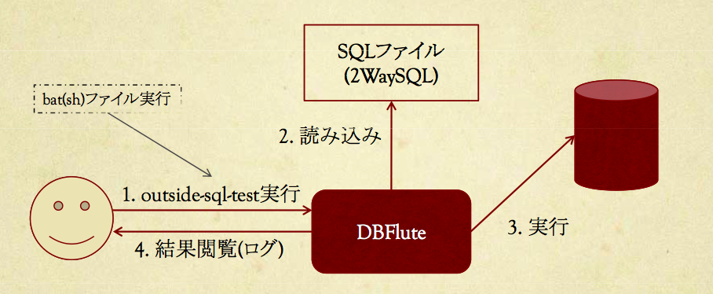

OutsideSqlTestタスク
${indexlist}OutsideSqlTestタスクとは？
外だしSQLを 2Way-SQLとして実際にDBに実行 して、SQLのチェックを行うDBFluteタスクです。
ディベロッパーが実装した外だしSQLを気軽にチェックするという役割だけでなく、 外だしSQLへのDB変更時の影響を調べる のにも利用できます。
図 : OutsideSqlTestタスクの概念図 
{kind=link}
主な実行タイミング
- 外だしSQLの実装中 (ディベロッパー)
- DB変更の発生 (アーキテクト)
- DBFluteアップグレード直後 (アーキテクト)
- 本番運用後のDB変更 (アーキテクト)
実行コマンド
DBFluteクライアント配下の outsidesqltest.(bat|sh) をコマンドから実行します。
環境構築
DBFluteのセットアップが終わった時点から利用できます。
処理概要
OutsideSqlTestタスクを実行すると処理が始まります。
1. 外だしSQLを参照
SQLの読み込み対象は、Sql2Entityタスクと同じです。
2. パラメータコメントをチェック
パラメータコメントの文法チェックを行います。 簡易なチェックだけではありますが、アプリケーションを実行してからの画面実行経由での発見よりもずっとコストは下がります。
Sql2Entityマークのチェック
Sql2Entityマークのケアレスミスなどをチェックします。例えば、コロンがセミコロンになっていたり、m が n になっていたり、ありがちなチェックをしています。
パラメータコメントのパース可否
パラメータコメントがパース可能かどうかをチェックします。主に IFコメントのケアレスミス や ENDコメントの不足 を検知します。
外だしSQLのタイトル (オプション)
外だしSQLのタイトル が記述されているか否かをチェックします。これは outsideSqlDefinitionMap.dfprop で設定するオプションであり、プロジェクトのポリシーとして外だしSQLのタイトルを必須にしたい場合 に有効です。
外だしSQLの説明 (オプション)
外だしSQLの説明 が記述されているか否かをチェックします。これは outsideSqlDefinitionMap.dfprop で設定するオプションであり、プロジェクトのポリシーとして外だしSQLの説明を必須にしたい場合 に有効です。
3. 外だしSQLを(2Way-SQLとして)実行
読み込んだSQL(select文)を そのまま実行 します。よって、実行されるSQLは 2Way-SQL 形式となっていなければなりません(2Way-SQLになっているかのチェックにもなっています)。
SQLエラーがあっても中断はせず、全てのSQLが実行されて、最後にログに結果が一覧として表示されます。 一つでもSQLエラーがあればタスクはFAILUREとして終了します。 SQLに不具合がある場合は、タスクの実行ログで原因を確認して修正してから 再度実行して下さい。
また、全てトランザクション内の実行で必ずロールバックされます。
実行対象外SQL
デフォルトでは読み込まれた全てのSQLが実行されますが、どうしてもOutsideSqlTestで実行されてほしくないSQLがある場合に、特別に OutsideSqlTestでの実行対象から外すマークがあります。
Sql2EntityマークのCustomizeEntityマークの形式で、クラス名部分に df:x と指定すると、OutsideSqlTestでの実行対象外になります。これを OutsideSqlTest除外マーク と呼びます。
e.g. ある外だしSQLをOutsideSqlTestでの実行対象外にする @SQL-File
-- #df:x#
truncate table MEMBER;
同時にSql2EntityタスクでもこのSQLが実行されることはありません。
トランザクションでロールバックできないSQLに有効です。例えば、truncate文やcreate文です。
様々なオプション
Sql2Entityタスクと同様に様々なオプションがあります。